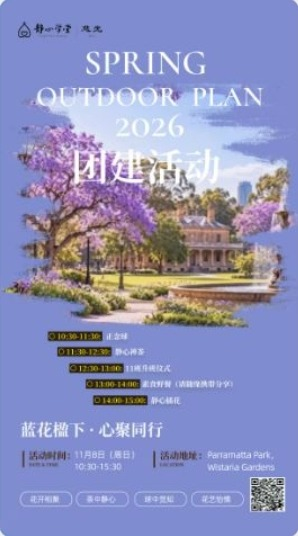

Come along with Grace
Under the Jacarandas 💜
静心学堂 Spring Outdoor Plan 2026 · a mindful day outdoors
In November the jacarandas are out in Parramatta Park. Bring a friend for a slow Sunday of mindfulness, tea, a picnic and good conversation 🌳
Details
Open for sign-up
Under the Jacarandas · Spring Outdoor Day
WhenSun 8 Nov 2026
10:30am–3:30pm
10:30am–3:30pm
WhereWistaria Gardens
Parramatta Park
Parramatta Park
Host静心学堂 (Jing Xin Academy)
Sign upMessage Grace first,
mention “referred by Grace Rock”
mention “referred by Grace Rock”

Programme as per the host's poster. Ask Grace for the full-size poster and sign-up QR code.
Join Grace · WhatsAppWhen you sign up, please mention you were referred by Grace Rock.